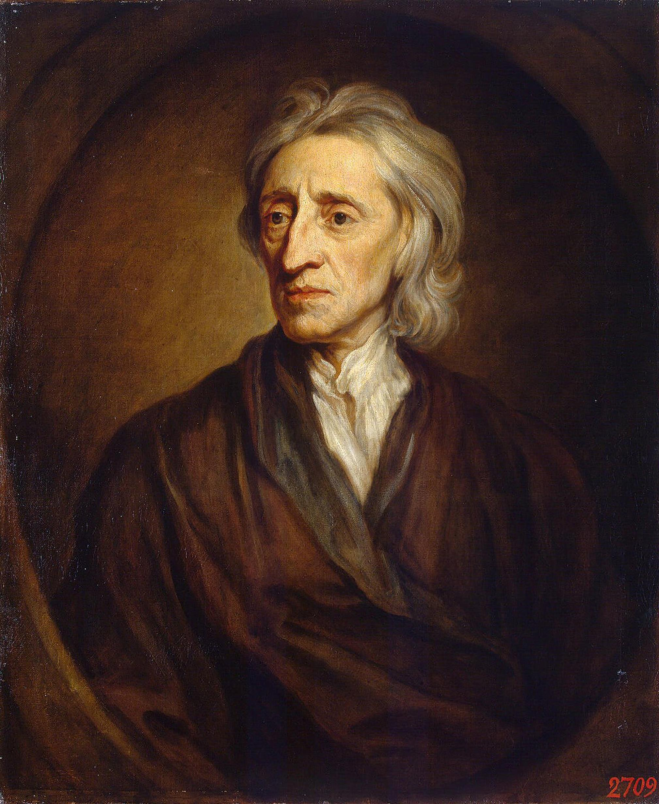
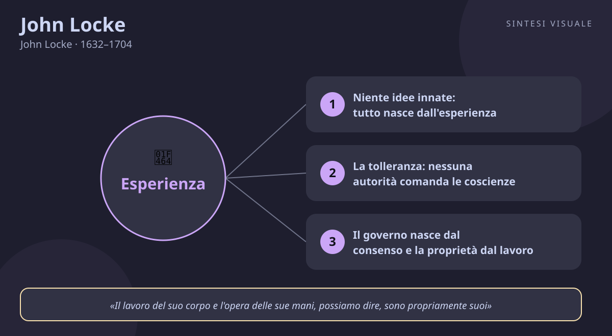

John Locke
John Locke · 1632–1704
«La mente è un foglio bianco: tutto viene dall'esperienza»
- Tabula rasa
- Tolleranza
- Consenso
- Proprietà
💬La massima
«Supponiamo che la mente sia, come si dice, un foglio bianco, privo di ogni carattere, senza alcuna idea.»
— John Locke, Saggio sull'intelletto umano, 1689 (in inglese: «Let us then suppose the mind to be, as we say, white paper, void of all characters, without any ideas», Libro II, cap. I, § 2)
Locke domanda subito dopo: come si riempie, questo foglio? «A ciò rispondo, in una parola: dall'ESPERIENZA.» Tutto ciò che sappiamo nasce da due sole fonti: i sensi, che ci mostrano il mondo esterno (colori, suoni, caldo, freddo), e la riflessione, con cui la mente osserva le proprie stesse operazioni (dubitare, credere, volere, ragionare). Niente è «stampato» in noi dalla nascita: né principi morali, né idee di Dio, né verità pronte all'uso. La formula latina che la tradizione gli attribuisce è tabula rasa, la tavoletta di cera degli antichi ancora da scrivere.
L'idea sembra semplice, ma è una bomba. Se nessuno nasce con la verità in tasca, allora nessuno può pretendere di possederla per diritto di nascita: né i re per diritto divino, né i preti che impongono una fede, né i professori che ripetono Aristotele a memoria. Ognuno deve costruirsi il sapere osservando, sbagliando, confrontando. E c'è un corollario dolcissimo, che riguarda tutti noi: se la mente è un foglio bianco, allora si può sempre riscrivere. Nulla di ciò che siamo è un destino inciso nella pietra: abitudini, carattere, convinzioni sono inchiostro, non pietra. È la base filosofica di ogni cambiamento personale.
👤Biografia
John Locke nasce il 29 agosto 1632 a Wrington, nel Somerset: suo padre è un modesto avvocato e ufficiale dell'esercito parlamentare, un puritano che gli insegna disciplina e amore per la libertà. Studia alla Westminster School e poi a Oxford, al Christ Church College, dove si laurea ma resta deluso dalla filosofia scolastica — un sapere fatto di parole, non di cose. Per questo si appassiona di medicina e scienze naturali, diventa amico del grande medico Thomas Sydenham e della Royal Society, e impara il metodo che userà in filosofia: osservare i fatti prima di costruire le teorie.
Nel 1666 la sua vita cambia: conosce Anthony Ashley Cooper, futuro conte di Shaftesbury, potente uomo politico, di cui diventa medico, consigliere e amico. È lui a spingerlo verso la politica e la questione della tolleranza religiosa. Quando Shaftesbury cade in disgrazia e fugge in Olanda, Locke lo segue nel 1683 e resta esule per sei anni, scrivendo in clandestinità i suoi capolavori. Torna in Inghilterra solo dopo la Gloriosa Rivoluzione del 1688, a bordo della stessa nave della futura regina Maria. Pubblica allora, quasi insieme, i libri che lo rendono celebre: il Saggio, i Due trattati sul governo, la Lettera sulla tolleranza.
Non si sposa mai, non ha figli, vive modestamente ospite dell'amico Masham a Oates, nell'Essex, tra libri, esperimenti e lettere con mezza Europa. Lavora anche per lo Stato come commissario del commercio. Muore il 28 ottobre 1704, sereno e stimato da tutti: il medico-filosofo che aveva insegnato al mondo a pensare con la propria testa.
📌Sintesi del pensiero
Per Locke la mente nasce vuota e tutto il sapere viene dall'esperienza: sensazione del mondo esterno e riflessione sulle operazioni interiori. Per questo nessun potere — né re, né Chiesa — può imporre verità o fedi: la ragione di ciascuno giudica da sé, e lo Stato esiste solo per proteggere vita, libertà e beni di tutti, in virtù del consenso dei governati. Quando un governo diventa tirannico, il popolo ha il diritto di deporlo. Educazione e abitudini, non la nascita, decidono chi diventiamo.
🏛️I temi fondamentali
- Niente idee innate: tutto nasce dall'esperienza. È la tesi che apre il Saggio: la mente non contiene alcun principio «stampato» da Dio o dalla natura — lo dimostrano i bambini, i popoli lontani e persino gli stolti, che di certe presunte verità universali non sanno nulla. Esistono solo due fiumi che riempiono il foglio bianco: la sensazione (il giallo del limone, il freddo della neve) e la riflessione (accorgersi di dubitare, di volere, di ricordare). Esempio concreto: quando al lavoro impari davvero un mestiere, non basta aver «studiato la teoria» — è solo sbagliando un preventivo, riascoltando una telefonata andata male, osservando un collega esperto, che le idee si incidono davvero.
- La tolleranza: nessuna autorità comanda le coscienze. Nella Lettera sulla tolleranza Locke sostiene che lo Stato si occupa di corpi e beni, non di anime: la fede è un atto interiore, e costringere qualcuno a credere è come ordinargli di vedere un colore diverso — impossibile e assurdo. Solo chi predica l'intolleranza o minaccia lo Stato va limitato. Esempio concreto: in un gruppo di amici o in famiglia, imporre a tutti le proprie scelte — il partito, la dieta, la squadra — genera solo finzione e rancore; lasciare ciascuno libero di convincersi con i propri tempi, come chiede Locke, è l'unica strada che produce adesioni sincere.
- Il governo nasce dal consenso e la proprietà dal lavoro. Nello stato di natura gli uomini sono liberi ed eguali, con diritti a vita, libertà e beni; per proteggerli affidano il potere a un governo, che resta legittimo solo finché rispetta il patto. E i beni di chi sono? Di chi li lavora: «il lavoro del suo corpo e l'opera delle sue mani sono propriamente suoi» — cogliendo una mela, coltivando un campo, l'uomo mescola al bene comune qualcosa di suo e lo fa suo. Esempio concreto: un artigiano che costruisce la propria reputazione cliente dopo cliente, o un dipendente che documenta risultati propri invece di vivere di rendita sul nome dell'azienda, sta applicando Locke — ciò che è tuo è ciò che hai lavorato, non ciò che hai ereditato.
- L'educazione forma il foglio bianco: virtù prima dei libri. Nei Pensieri sull'educazione Locke rovescia la scuola del suo tempo: niente punizioni corporali e niente nozioni a memoria, ma abitudini, esempio e ragionamenti adatti all'età. Prima la virtù (autocontrollo, onestà, coraggio), poi la saggezza pratica, e solo infine le buone maniere e il sapere. Esempio concreto: un genitore che vuole un figlio ordinato ottiene più con tre settimane di esempio costante — rimettere a posto le proprie cose ogni sera — che con un anno di prediche; e un giovane professionista cresce più con un'abitudine quotidiana (mezz'ora di studio, sport regolare) che con un corso intensivo una tantum.
📚Le opere principali
- Saggio sull'intelletto umano (1689). Oltre ottocento pagine per rispondere a una domanda: da dove vengono le nostre idee? Tesi centrale: nessuna idea è innata, tutto deriva da sensazione e riflessione. Conta perché fonda l'empirismo moderno e l'idea che la ragione di ognuno — non l'autorità — è giudice della verità.
- Due trattati sul governo (1689). Il primo demolisce il diritto divino dei re; il secondo fonda la politica sul consenso: gli uomini, liberi ed eguali, creano il governo per proteggere vita, libertà e proprietà, e possono deporlo se diventa tiranno. Conta perché è il manifesto del liberalismo: Costituzione americana e rivoluzione francese nascono anche da queste pagine.
- Lettera sulla tolleranza (1689). Breve e luminosa: Stato e Chiesa hanno scopi diversi, e nessuno può essere costretto a credere. Tesi centrale: la vera fede non si impone con la forza. Conta perché è il primo grande testo moderno per la libertà religiosa, scritto mentre in Francia veniva revocato l'editto di Nantes.
- Alcuni pensieri sull'educazione (1693). Nato da lettere a un amico padre di famiglia, diventa il manuale educativo d'Europa per un secolo. Tesi centrale: formare il carattere con abitudini ed esempio vale più che riempire la testa di nozioni. Conta perché inventa, di fatto, la pedagogia moderna: corpo sano, mente disciplinata, virtù prima del latino.
💬Massime celebri
«Supponiamo che la mente sia, come si dice, un foglio bianco, privo di ogni carattere, senza alcuna idea» — Saggio sull'intelletto umano (1689), Libro II, cap. I, § 2. Conta perché è la frase-simbolo dell'empirismo: nessuno nasce sapendo, tutti imparano vivendo — e quindi tutti possono cambiare.
«Il fine della legge non è abolire o restringere, ma conservare ed accrescere la libertà: perché in tutti gli stati di esseri creati capaci di leggi, dove non c'è legge, non c'è libertà» — Secondo trattato sul governo (1689), cap. VI, § 57. Conta perché rovescia il luogo comune «meno regole, più libertà»: senza regole giuste, il più forte domina e nessuno è davvero libero.
«Il lavoro del suo corpo e l'opera delle sue mani, possiamo dire, sono propriamente suoi» — Secondo trattato sul governo (1689), cap. V, § 27. Conta perché fonda la proprietà sul lavoro e non sul privilegio: ciò che hai costruito con le tue mani nessuno può togliertelo senza ingiustizia.
⌛Contesto storico
Locke nasce nel 1632, mentre l'Inghilterra scivola verso la guerra civile: ha dieci anni quando Carlo I ed il Parlamento si scontrano, assiste da ragazzo al processo e alla decapitazione del re nel 1649, vive sotto la dittatura puritana di Cromwell e vede la Restaurazione monarchica del 1660. Sono decenni di sangue per questioni che oggi sembrano lontane — cattolici contro protestanti, re contro Parlamento — ma che decidono chi comanda e perché. A Londra intanto accadono cose enormi: la peste del 1665, il grande incendio del 1666, e nel 1660 la fondazione della Royal Society, il circolo di scienziati che mette l'esperimento sopra l'autorità dei libri.
L'Europa attorno a lui è un cantiere: Cartesio muore quando Locke ha diciotto anni, Hobbes pubblica il Leviatano nel 1651 sostenendo che serve un potere assoluto per evitare la guerra di tutti contro tutti, Newton pubblica i Principia nel 1687 mentre Locke è esule in Olanda. Nel 1685 il Re Sole revoca l'editto di Nantes e i protestanti francesi fuggono in massa — molti proprio in Olanda, sotto gli occhi di Locke. Poi la Gloriosa Rivoluzione del 1688 caccia Giacomo II senza spargimento di sangue e il Parlamento approva nel 1689 la Dichiarazione dei diritti: è il mondo che Locke aveva teorizzato a diventare realtà.
I movimenti che lo formano sono l'empirismo nascente di Bacone, il metodo di Cartesio (che ammira ma corregge, negando le idee innate), la politica di Hobbes (che rovescia, sostituendo il patto di sottomissione con il patto di fiducia), la legge naturale del giurista Hooker e la medicina osservativa di Sydenham e Boyle. I movimenti che lui trasmette sono l'Illuminismo intero: Voltaire lo celebra in Francia, Montesquieu ne ricava la divisione dei poteri, i padri fondatori americani ne fanno la base dell'indipendenza, e da lì il liberalismo di Mill, la democrazia moderna e la pedagogia contemporanea.
🌊L'eredità
Senza Locke il mondo moderno avrebbe un'altra faccia. Il primo a raccoglierne il testimone è Voltaire, che nelle Lettere inglesi presenta Locke ai francesi come il Newton della mente: da lì l'Illuminismo continentale beve a piene mani — Montesquieu, Diderot, l'Encyclopédie. Berkeley e Hume partono dal suo empirismo per portarlo alle estreme conseguenze, e Kant stesso, «svegliato dal sonno dogmatico» da Hume, sta in realtà discutendo con l'eredità di Locke. Ma l'effetto più clamoroso è politico: Thomas Jefferson, scrivendo la Dichiarazione d'indipendenza americana del 1776, copia quasi parola per parola la formula lockiana dei diritti a «vita, libertà e proprietà» — trasformata in «vita, libertà e ricerca della felicità». Da quel momento ogni costituzione liberale, ogni dichiarazione dei diritti, ogni difesa della tolleranza parla — spesso senza saperlo — la lingua di Locke. Ancora oggi, quando discutiamo di libertà religiosa, di limiti del potere, di scuola che formi cittadini e non sudditi, stiamo proseguendo la sua conversazione.
🌍Esempi di oggi
- Il collega che dice «io sono fatto così». Ripete da anni «non sono portato per i numeri» o «non so parlare in pubblico», come se il carattere fosse inciso nella pietra. Riletto con Locke, è un foglio su cui l'esperienza ha scritto presto e lui ha smesso di correggere: bastano piccoli esperimenti quotidiani — un foglio di calcolo al giorno, un intervento breve per riunione — e in pochi mesi la «natura» si rivela abitudine riscrivibile.
- Il capoufficio che detta tutto e spegne l'iniziativa. Controlla ogni email, vieta ogni margine di scelta, e poi si lamenta che «nessuno prende iniziative». È il governo senza consenso di Locke: senza regole giuste che proteggano l'autonomia, non c'è libertà ma solo obbedienza paurosa — e la squadra, come un popolo senza diritti, smette di collaborare e inizia a fingere.
- La chat di famiglia sul credo del momento. Uno zio vuole imporre a tutti la sua dieta, il suo partito, la sua squadra, e chi dissente viene deriso. Locke risponderebbe con la Lettera sulla tolleranza: le convinzioni vere nascono dentro, non si impiantano con la pressione — e la cena che accetta il disaccordo finisce in risate, quella che lo vieta finisce in silenzio.
📄
# John Locke — «La mente è un foglio bianco»
Buongiorno! Oggi incontriamo il filosofo che ha insegnato all'Europa moderna a fidarsi dell'esperienza più che dei dogmi: medico mancato, consigliere di potenti, esule in Olanda, padre del liberalismo e dell'idea che nessuno nasce già «programmato». Il ritratto qui sopra — Locke maturo nel celebre dipinto di Godfrey Kneller del 1697, parrucca scura e sguardo calmo e attento — lo mostra negli anni in cui i suoi libri stavano cambiando il mondo, tra la rivoluzione inglese e l'Illuminismo che verrà.
🧠Quiz
Metti alla prova quello che hai letto — rispondi in chat con es. 1B 2A 3C 4D 5A (usa «-» per le risposte che salti):
1 Da quale opera viene la massima «la mente è un foglio bianco, senza alcuna idea»?
2 Secondo Locke, da dove viene tutto ciò che sappiamo?
3 Che cosa sostiene Locke nella Lettera sulla tolleranza?
4 Quando un governo è legittimo, secondo il Secondo trattato sul governo?
5 Perché Locke dà tanta importanza all'educazione e alle abitudini?
✅Soluzioni — tocca per vedere
1C – 2B – 3C – 4C – 5A
🔁Ripasso
- Foglio bianco ed esperienza (domande 1-2): se hai sbagliato la 1 o la 2, ricorda la scena del Saggio, Libro II, cap. I, § 2: niente idee innate, solo due fonti — i sensi fuori e la riflessione dentro — e la parola d'ordine EXPERIENCE scritta da Locke in maiuscolo.
- Tolleranza e governo (domande 3-4): se hai sbagliato la 3 o la 4, ricorda la divisione dei compiti: lo Stato protegge corpi e beni, mai le anime; e il potere è un mandato fiduciario — con consenso protegge la libertà (§ 57), senza consenso diventa tirannia e può essere revocato.
- Educazione (domanda 5): se hai sbagliato la 5, ricorda l'ordine di Locke: prima la virtù con abitudini ed esempio, poi la saggezza pratica, e solo infine le nozioni — perché su un foglio bianco è la pratica quotidiana a scrivere più a fondo.
🖼️In un colpo d’occhio

Tocca l’immagine per ingrandirla.